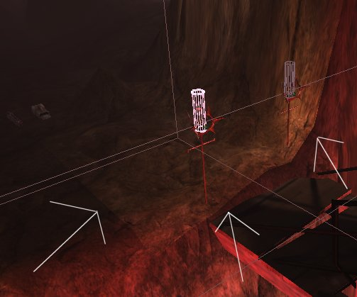

TerrainInfo
This actor holds all the information required to display a terrain: layers, textures, alpha channels, heightmap etc. In UnrealEd, you'll see a large white grid in wireframe mode, and the textured terrain in textured mode if the TerrainInfo holds any Terrain Texture Layers. (If the terrain doesn't show, hit 'T' in the UnrealEd Viewport to toggle terrain visibility.) Each square of the grid is called a quad. Groups of quads considered for rendering are called sectors.
For terrain to be visible and to collide players, the zone this actor is in must also have the ZoneInfo actor with ZoneInfo → bTerrainZone set to true. The terrain in a "TerrainZone" will be visible from other "normal" zones. If the terrain overlaps into "normal" zones, then those portions will be visible from the "TerrainZone", but will vanish (and not collide) once the player is in the "normal" zone.
The position of the actor determines the position of the terrain. Therefore it's a good idea to set this actor on-grid. Do Actor Context Menu → Reset → Move to Origin after adding it; and set its Advanced → bEdShouldSnap = True if you need to move it afterwards.
Properties
- bool bKCollisionHalfRes
- This option means use half the graphics res for [Karma collision]?. Karma ignores per-quad info (eg. 'invisible' and 'edge-turned') with this set to true.
- float DecoLayerOffset
- array<DecorationLayer?> DecoLayers
- see Terrain Decoration Layer
- bool Inverted
- the terrain is rendered upside-down. Used for cave ceilings etc
- array[32] Layers
- see Terrain Texture Layer
- Texture TerrainMap
- The heightmap of the terrain: this is a texture where the shades of grey determine the height of the terrain. One pixel represents the height of one quad of terrain. If you create the terrain in Terrain mode, this will have been automatically set to the Texture name you gave then. When you use Terrain mode tools, you are actually editing this texture. You can change this property so the terrain uses a different texture: it will alter the terrain. You can even change to a texture of a different size, and the terrain will change accordingly.
- vector TerrainScale
- This vector determines the overall scale of the terrain. The X and Y values give the size of a sector (or "quad", or grid square). The default size is 64 UU square. The Z value scales terrain vertically.
- int TerrainSectorSize
- Sets the size of sectors. The default is 16, ie each sector is a square 16 quads across. Terrain is rendered sector by sector. Changing this value may help level optimization. See also udn:LevelOptimizationTerrain.
- Texture VertexLightMap
Notes
If you have something like Figure1, you might want to reduce the size of the sector. The lines that are produced in that picture will magically vanish. 

Figure 1. |
Tarquin: Could someone explain this bug?
SuperApe: IIRC, this artifact happens often when you change the size of the lightmap, heightmap. The resolution? Sorry, I can't rememeber exactly. I had to do with an alteration of the base texture.
Related Topics
Discussion
Foxpaw: Not sure where this should go exactly, but terrain appears to be like a blocking sheet - it has no "substance." Sometimes Ragdolls find a way to slither onto the other side of the terrain, and once something is on the other side it will just fall. As far as why that's relevant - well, things like a third person camera can end up on the underside of the terrain for instance, or anything else that moves itself without using the native physics.
MythOpus: Yep. And on certain maps, you were able to teleport yourself into them using the translocator I do believe this can probably be fixed up...
King Mango I'd like to do a more thorought treatment of the TerrainInfo and I'd like to completely redo this page to remove the script type references as it confuses those of us who are not familiar with floats,vectors and the like. ANyone object?
Tarquin: best if we leave them in, you never know when those coders might be around... just ignore the first word for each property 
King Mango lol OK, how bout this then, put the script ?operation? type after the entry?
like Layers then the script thingy?